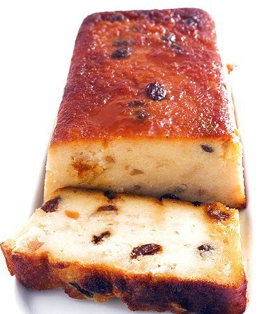

71 recetas de postres fáciles y rápidos
Webedia Directo al Paladar Menú Nuevo Buscar Pinterest Facebook Flipboard Instagram Youtube POSTRES MENÚ SEMANAL SELECCIÓN
Partners
Triunfa Con Buitoni Cocina con Maggi Destaca con Pascual71 recetas de postres fáciles y rápidos
Sin comentarios HOY SE HABLA DE Menú Dieta Refresco España Alimentos Ofrecido por PascualCómo preparar unas crepes perfectas y dos ideas (dulce y salada) para rellenarlas
Ofrecido por MaggiPor qué mucha gente tiene la tortilla de patata y calabacín como su receta favorita de este clásico
Ofrecido por BuitoniEmpanadas criollas: la edad dorada de una elaboración de origen humilde
Compartir 71 recetas de postres fáciles y rápidos
Facebook Twitter Flipboard Email Síguenos Twitter Facebook Youtube Instagram Pinterest Flipboard 01 marzo 2021, 18:25 Carmen Tía Alia @tiaalia ¡Gracias! 1275 votosEs indiscutible que si has aterrizado en esta página y nos estás leyendo es porque te gusta la cocina. Es posible que seas, incluso, reincidente, que estés suscrito a nuestras actualizaciones y que pases por aquí con regularidad. Nada nos gusta más que tus visitas y el hecho de que te encante cocinar, pero nos da en la nariz que, igual que a nosotros, también te gusta tener a mano recetas fáciles y rápidas .
Y es que, seamos realistas, el amor y la afición por la cocina no son sinónimos de esclavitud y horas de trabajo y dedicación. Eso se lo dejamos a los estrellas y profesionales del sector, a nosotros nos gusta (y mucho) tener las cosas fáciles (aunque de vez en cuando nos liemos la manta a la cabeza) y por eso hemos dedicado un tiempo a la tarea de recopilar 71 recetas de postres fáciles y rápidos . Sabemos lo bien que te van a venir, sea la época del año que sea.
El criterio que hemos seguido a la hora de seleccionar estas 67 recetas de postres fáciles y rápidos es que, desde el punto de vista de la técnica, fuesen sencillas de elaborar y, desde el punto de vista del tiempo, no sobrepasaran los 30 minutos de preparación. No hemos contado los tiempos de horno, ni de reposo, ni de congelación, ya que no conllevan trabajo alguno para nosotros.
En Directo al Paladar Una docena de tartas y postres caseros que nunca fallan (perfectos para Navidad)Recetas de dulces de bocado
Empezamos este recopilatorio con un buen puñado de recetas de dulces de bocado . Perfectas para cuanto apetece un dulce en pequeña cantidad, para un bufé dulce, para acompañar el café, para comer con los dedos, para infinidad de ocasiones.
Los encontramos con toques cítricos en los bocaditos de naranja y albahaca y los bocaditos de limón . Aunque los reyes indiscutibles de la sección son los chocolateados, tipo trufas, entre los que las bolitas de chocolate con albaricoque y naranja y las trufas de cava y frambuesa nos tienen robado el corazón ¡y el estómago! Os dejamos la receta completa de estas últimas que, pese a estar pensadas para San Valentín, son geniales para cualquier celebración festiva.
Trufas de cava y frambuesa
Ingredientes
Para 12 unidades Chocolate negro 70% de cacao 100 g Nata líquida 80 ml Cava 30 ml Azúcar glasé 25 g Mantequilla 5 g Frambuesas deshidratadas 25 g Cacao puro en polvoCómo hacer Trufas de cava y frambuesa
Dificultad: Fácil Tiempo total 15 m Elaboración 15 m Reposo 1 hCalentamos la nata junto al azúcar hasta que hierva. En un cuenco troceamos el chocolate y vertemos la nata caliente por encima mientras removemos con unas varillas para que el chocolate se deshaga completamente. Agregamos la mantequilla y el cava mezclamos totalmente . Vertemos la mezcla en una bandeja, echamos la frambuesa, removemos y refrigeramos hasta que la masa se haya endurecido (cuanta más delgada sea la superficie antes se enfría). Una vez tengamos la masa cuajada, hacemos bolitas de igual tamaño con una cuchara y damos forma de bolita perfecta con las manos, teniendo cuidado de no dar mucho calor a la masa. Por último rebozamos cada trufa en lo que prefiramos: cacao en polvo, virutas, bolitas de anís, etc. Refrigeramos hasta el momento de tomar en un recipiente hermético o túper para que el chocolate no se humedezca.
¡Gracias! 1275 votos
En Flipboard: Postres, tartas y bizcochos
Recetas de postres, tartas y bizcochos deliciosos: trucos, ingredientes, las mejores presentaciones y todas las recetas de repostería casera, fácil y rápida de Directo al Paladar.
Seguir esta revista en FlipboardOtros dulces de bocado:
Hojaldres rellenos de crema de cacao y nueces Brownie express de tres ingredientes Nutelloti Brigadeiros brasileños Trufas de aguacate Bolitas de coco y chocolateRecetas de tartas fáciles y rápidas
Al contrario que ocurre con el caso anterior, hay ocasiones que requieren de dulces en forma de tarta . Las asociamos a celebraciones especiales, como cumpleaños, bodas, etc y también a pasar horas elaborándolas. Este no es el caso de nuestras propuestas. Empezando por el cheesecake de Nutella y terminando por el tiramisú . Os invitamos a las preparéis y lo comprobéis por vosotros mismos.
Otras recetas de tartas fáciles y rápidas :
Tarta de frambuesa y queso crema Tartaletas de lima y queso crema Tarta de chocolate fácil, lista en 15 minutos . Tarta de la abuela Tarta de galletas y chocolate Tarta ultrafina de manzana y vainilla Tarta rápida de chocolate negro y galletas OreoHelados, sorbetes y polos
Cuando buscamos un postre ligero con el que rematar una comida o cena copiosa, nuestros mejores aliados son los helados, sorbetes y polos. Son refrescantes, digestivos y ayudan a rebajar la sensación de pesadez que viene cuando nos pasamos comiendo. Nos encanta el helado de cerezas y yogur , en el que se pueden usar otros frutos de temporada o frutos rojos congelados, como es el caso del helado de frutos rojos y yogur sin heladera .
Otras recetas de helados, sorbetes y polos :
Helado de dulce de leche sin heladera Helado cremoso de vainilla sin heladera Semifrío de cerezas, arándanos y yogur Sorbete de mango y naranja con Thermomix Polos de leche condensada y limón Polos de yogur griego y frambuesasCakes exprés en microondas
El microondas es un gran aliado cuando se trata de ahorrar tiempo en la cocina y con el se puede hacer mucho más que calentar la leche del desayuno o las sobras de la comida. Los mug cakes o bizcochos en taza son un buen ejemplo que os animamos a poner en práctica. ¿Qué os parece un mug cake de chocolate, jengibre y pera o un bizcocho de queso y cerezas en taza para romper el hielo?
Otras recetas de cakes express en microondas :
Financiers con frambuesas en taza al microondas Bizcocho de té verde al microondas Mug cake de limón glaseado Mug cake de chocolate negro Bizcocho de helado de chocolate en tazaRecetas de mousses
Fácil no, lo siguiente. Eso es lo que son las mousses. Postres que no tardan nada en estar listos y que tienen gran acogida entre los comensales. Esa textura etérea que le otorga la clara montada a punto de nieve las hace irresistibles y nos deja con una sensación de placer tremenda, pero sin la pesadez de otros postres . Aunque los reyes son los de chocolate, también se puede jugar con frutas para adaptarlos al gusto de todos.
Mousse de yogur con frutos rojos Mousse cremosa de chocolate y aguacate Mousse de chocolate esponjosa con dos ingredientes y sin huevo Mousse de chocolate perfecta Mousse de chocolate negro y café Mousse rápida de melocotón Mousse fácil de fresa y queso Mousse de cavaRecetas de cremas fáciles y rápidas
Las cremas tienen algo especial que las hace muy placenteras. Los postres que se presentan en forma de crema son un triunfo seguro . Su versatilidad permite tocar tradición, como es el caso de la rema de galleta María y caramelo , pero también innovación, mejor ejemplo que la crema caramelizada de zanahoria no encontramos. Solo tenéis que elegir vuestra preferida entre tanta opción.
Otras recetas de cremas fáciles y rápidas :
Crema de cheesecake de yogur y moras Crema de café con chantilly Crema de queso y fresa Crema de Oreo, yogur y chocolate blanco Crema de caramelo salado Crema de cacahuete y chocolate con leche Crema de chocolate y moka Crema de caramelo con pralinéRecetas de postres en vasitos individuales
Presentar el postre en vasito individual supone un ahorro de tiempo a la hora de prepararlo, pues el contenido se asienta más rápido. También evita engorros a la hora de servirlos y permite jugar con las presentaciones . Al igual que con los postres de cremas, los vasitos individuales suele ser un gran acierto. Entre las muchas recetas que tenemos publicadas en Directo al Paladar, os proponemos:
Vasitos de crema de queso fresco y mascarpone con fresas y té matcha Vasito de yogur con puré de mango y lima Petit de chocolate Vasito de tarta de queso Vasito de yogur y gelatina rosa Vasito de coco y fresas Vasito de tarta de queso con salsa de fresas al anís estrellado Vasito de banoffee Vasito de pera y tres chocolates
Suscríbete para recibir cada día nuestras recetas, información sobre nutrición y actualidad sobre gastronomía.
Otras recetas de postres fáciles y rápidos
Cerramos el post con una sección en la que cabe un poco de todo, un pupurrí de recetas de postres fáciles, rápidos y deliciosos tras los cuales se os van a ir los ojos. De otros países llegan el pudding danés de manzana o Æblekage , el cranachan o postre escocés de frambuesa, whisky y copos de avena y el Eton mess o postre británico de merengue y frutos rojos . Pero más nuestros son:
Flan de turrón sin horno y sin huevo Fresas escabechadas al agua de azahar Compota de manzana y pasas al vino blanco Empanadillas hojaldradas de plátano, queso y naranja Natillas de chocolate sin huevo Natillas caramelizadas Pudding de chocolate suizo Pudding de chía y chocolate con yogur En Directo al Paladar | 57 recetas de pasta
En Directo al Paladar | 19 recetas de panna cotta, el postre más fácil y rápido
Directo al Paladar en Instagram
Seguir
Compartir 71 recetas de postres fáciles y rápidos
Facebook Twitter Flipboard E-mail Temas Recetas de Postres Crema Yogur dulce postres Tartas Recetas de NavidadCompartir
Facebook Twitter Flipboard E-mail 1Si te ha gustado, puedes recibir más en tu correo
Te enviamos nuestra newsletter una vez al día, con todo lo que publicamos
Comentarios cerrados Temas de interés Tarta tres cocholates Thermomix brownie bizcocho de yogur crema pastelera Roscón de Reyes ensalada césar pollo al horno lentejas tortilla de patatas croquetas torrijas fideuá InicioPartners
Triunfa Con Buitoni Cocina con Maggi Destaca con Pascual Recetas con Thermomix Recetas de Aperitivos Recetas de Ensaladas Recetas de Postres Recetas Vegetarianas Utensilios Postres fáciles y rápidos Recetas de invierno Horno Huevos Azúcar HarinaVer más temas
Síguenos Twitter Facebook Youtube Instagram Pinterest Flipboard Directo al Paladar TV Lo mejor Equipo editorial Contacta con nosotrosMás sitios que te gustarán
Espinof Xataka Poprosa VitónicaExplora en nuestros medios
Tecnología Móviles, tablets, aplicaciones, videojuegos, fotografía, domótica Xataka Xataka Móvil Xataka Foto Xataka Android Xataka Smart Home Xataka Windows Xataka Ciencia Applesfera Genbeta Magnet Mundo Xiaomi Videojuegos Consolas, juegos, PC, PS4, Switch, Nintendo 3DS y Xbox 3DJuegos Vida Extra IGN Millenium Entretenimiento Series, cine, estrenos en cartelera, premios, rodajes, nuevas películas, televisión Sensacine Espinof Gastronomía Recetas, recetas de cocina fácil, pinchos, tapas, postres Directo al Paladar Estilo de vida Moda, belleza, estilo, salud, fitness, familia, gastronomía, decoración, famosos Vitónica Trendencias Trendencias Hombre Decoesfera Compradiccion Poprosa Latinoamérica Publicaciones de México Xataka México Directo al Paladar México Sensacine México 3DJuegos México Aviso legal Condiciones de uso Condiciones de uso de cookies Publicidad InicioReciente
Los mejores perritos calientes se cocinan en cerveza Cinco recetas de brochetas frías de aperitivo para el picoteo del finde La quesería de Jaén, montada de la nada, que se ha coronado en los 'Oscar del Queso' Costilla de cerdo agridulce con melocotones: receta de aires asiáticos para viajar en la mesa Nuestros favoritos Las nueve mejores recetas de empanadillas de Directo al Paladar Nuestros favoritos Las básculas de cocina mejor valoradas de Amazon desde 7,99 euros La mercancía más codiciada en el mercado negro ya no es el paladio ni el oro. Son los pistachos en Magnet Calamares a la malagueña, receta del guiso marinero más sabroso que hemos probado en los últimos tiempos El rooibos se convierte en el primer alimento africano con denominación de origen: qué es y por qué importa de dónde venga 29 recetas para alimentarnos de forma saludable y equilibrada en el menú semanal del 28 de junio Dónde comerse los mejores espetos de sardinas de Málaga (y de la Costa del Sol) Receta de vichyssoise con compota de manzana y crujiente de jamón Nuestros favoritos Espaguetis con pesto de almendras, tomate y rúcula: receta vegana que disfrutarán todos en casa Los pequeños electrodomésticos con los que preparar un auténtico “desayuno de campeones” Wetaca sufre un fallo de calidad y pide a los clientes que tiren sus táperes, pero no revela qué ha encontrado en los análisis Cómo hacer el entrecot a la pimienta perfecto, receta sencilla Las siete mejores formas de abrir una botella de vino cuando no tienes sacacorchos El gazpacho ¿en vaso o en plato? El debate que enfrenta, incluso, a los andaluces Receta de paté de pollo y naranja, para lucirte en el aperitivo o hacer un buen regalo Nuestros favoritos Cómo hacer yogur casero: consejos para quede perfecto y 27 recetas en las que usarloVer más artículos
Directo al Paladar TV
Cómo hacer la mejor receta de empanadas de jamón y queso al horno Receta de empanadas criollas caseras, fáciles y rápidas SANGRÍA como DIOS MANDAVer más vídeos
Síguenos Twitter Facebook Youtube Instagram Pinterest FlipboardEn Directo al Paladar hablamos de
Recetas con Thermomix Recetas de Aperitivos Recetas de Ensaladas Recetas de Postres Recetas Vegetarianas Utensilios Postres fáciles y rápidos Recetas de invierno Horno Huevos Azúcar HarinaVer más temas
SubirWebedia
Tecnología
Xataka Xataka Móvil Xataka Foto Xataka Android Xataka Smart Home Xataka Windows Xataka Ciencia Applesfera Genbeta Magnet Mundo XiaomiVideojuegos
3DJuegos Vida Extra IGN MilleniumEntretenimiento
Sensacine EspinofGastronomía
Directo al PaladarEstilo de vida
Vitónica Trendencias Trendencias Hombre Decoesfera Compradiccion PoprosaLatinoamérica
Xataka México 3DJuegos México Sensacine México Directo al Paladar México Webedia Xataka Vida Extra Espinof Genbeta Directo al Paladar Xataka Ciencia Trendencias Applesfera Xataka Móvil Decoesfera Vitónica Xataka Foto Trendencias Hombre Xataka Android Xataka Smart Home Xataka Windows Magnet Compradiccion 3DJuegos Sensacine IGN Millenium Poprosa Mundo XiaomiTecnología
Xataka Xataka Móvil Xataka Foto Xataka Android Xataka Smart Home Xataka Windows Xataka Ciencia Applesfera Genbeta Magnet Mundo XiaomiVideojuegos
3DJuegos Vida Extra IGN MilleniumEntretenimiento
Sensacine EspinofGastronomía
Directo al PaladarEstilo de vida
Vitónica Trendencias Trendencias Hombre Decoesfera Compradiccion Poprosa